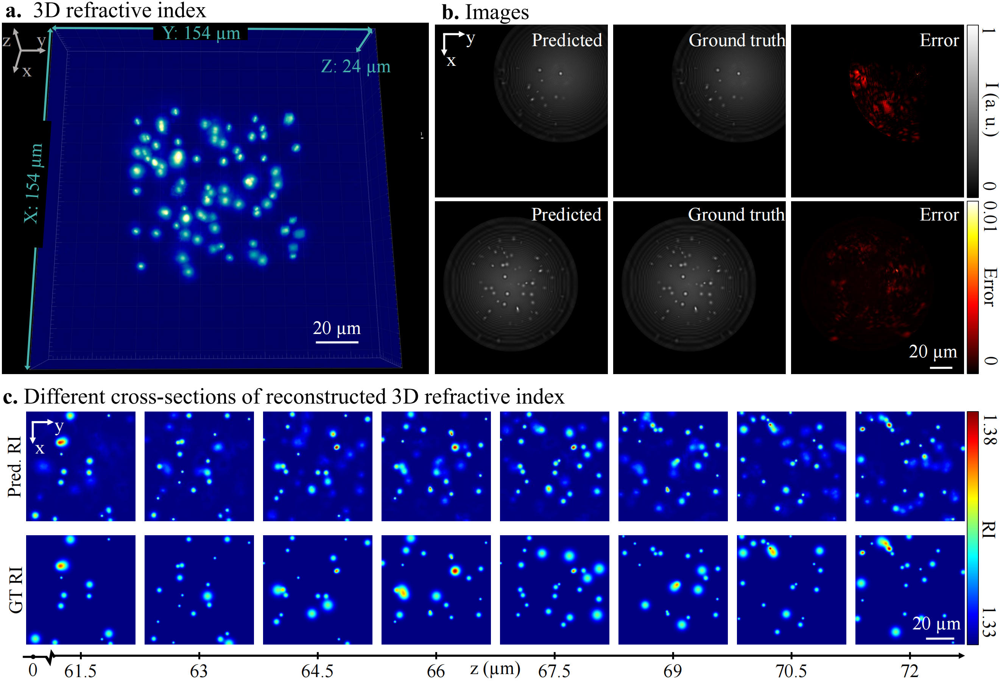
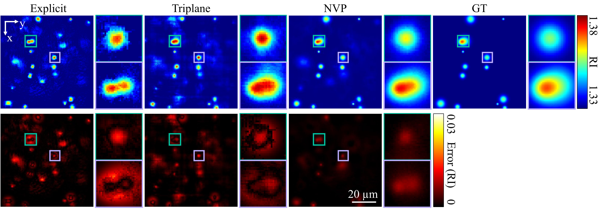
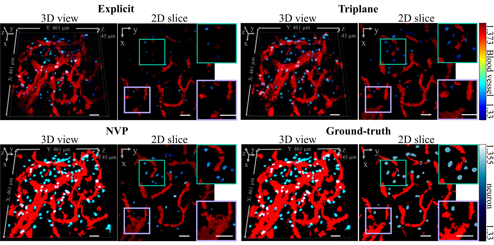

Overview
Overview of our method for 3D reconstruction.
a, Neural volumetric prior (NVP): Predefined 3D grids are reshaped and processed by MLPs to generate the predicted 3D RI volume $\hat{n}$. b, Multi-slice rendering equation: The multi-slice model calculates light propagation through the volumetric sample from the fluorescence sources (white spots at the bottom) by accounting for light diffraction at each slice. Each illumination configuration of the fluorescence sources (e.g., $F_1, F_i, F_n$) interacts with the volume to produce a corresponding set of rendered images ($\hat{I}_1, \hat{I}_i, \hat{I}_n$). The illumination configurations are jointly optimized with the RI volume. c, Loss functions: The predicted images $\hat{I}_{\text{pred}}$ are aligned with ground truth images $I_{\text{GT}}$ and masked based on light coherence, resulting in $\hat{I}_{\text{mask}}$ and $I_{\text{mask}}$. Loss functions, including $L1$, $L2$, and SSIM, are calculated over the masked regions of $\hat{I}_{\text{pred}}$ and $I_{\text{GT}}$, and a total variation (TV) regularizer $R(\hat{n})$ is applied.
Representation Methods
Illustrations of different neural representation methods.
a, Explicit neural representation: A non-parametric method in which the refractive index (RI) distribution $\hat{n}$ is directly reconstructed by the projection function $W_{\text{enr}}(x, y, z)$, which provide a one-to-one mapping from spatial coordinates to RI values \cite{Xue:22, FDT}. b,Implicit neural representation: Instead of directly reconstructing $\hat{n}$, this method optimizes the parameters of a multi-layer perceptron (MLP) $F_{\text{inr}}$, which is then used to predict $\hat{n}$ c, Triplane: A hybrid method combining non-parametric and parametric components by solving both the triplane features ${W_{xy}, W_{xz}, W_{yz}}$ and the neural model $F_{\text{tri}}$ to reconstruct $\hat{n}$ d, NVP: Our proposed hybrid approach reconstructs $\hat{n}$ by integrating an uncompressed volumetric prior ${W_{xyz}}$ into the neural model $F_{\text{nvp}}$.
Results
Synthetic Cells
NVP reconstructs the 3D RI of the synthetic cell dataset with micron-scale resolution and excellent optical sectioning.
a, Reconstructed 3D RI distribution showing the spatial distribution of cells within a 154 um * 154 um * 24 um volume. b, Predicted fluorescence images under the illumination from two representative fluorescence sources, demonstrating the accuracy of the reconstructed model compared to the ground-truth data. c, Cross-sectional comparison of RI reconstructed by NVP (top) and ground-truth (bottom) along the axial direction, illustrating consistency between the reconstructed and ground-truth RI distribution across the sample volume. Color bars indicate intensity ranges for predicted images, absolute errors, and RI values.
Synthetic Cells Comparison
NVP achieves more accurate reconstruction compared to the explicit and triplane methods.
The top row shows the RI maps produced by each method, with the ground-truth RI map included for reference. The bottom row displays the corresponding error maps, highlighting the reconstruction errors in each method. NVP demonstrates superior performance, producing smoother reconstructions and lower errors that closely match the ground truth.
Synthetic Tissue
NVP reconstructs the RI of varying morphological structures in the synthetic tissue dataset and outperforms the explicit and triplane methods.
The synthetic tissue contains both continuous structures (blood vessels, red) and sparse structures (neurons, blue). Left: the 3D view of the reconstructed RI. Right: a representative $Z$-slice and zoomed-in views of the reconstructed RI. Scale bars denote 50 um. /p>
Living MDCK Cells

NVP reconstructs the 3D RI of living MDCK cells with superior accuracy and fewer artifacts compared to the results from the explicit and triplane methods.
RI maps (top row), predicted images (bottom row, left), and error maps (bottom row, right) are shown for the explicit method, the triplane method, and NVP. The zoomed-in views (purple and green boxes) of the RI maps are shown in the top row, right. Scale bars denote 20 um. /p>
BibTeX
@misc{he2025compressivefourierdomainintensitycoupling,
title={Compressive Fourier-Domain Intensity Coupling (C-FOCUS) enables near-millimeter deep imaging in the intact mouse brain in vivo},
author={Renzhi He and Yucheng Li and Brianna Urbina and Jiandi Wan and Yi Xue},
year={2025},
eprint={2505.21822},
archivePrefix={arXiv},
primaryClass={physics.optics},
url={https://arxiv.org/abs/2505.21822},}